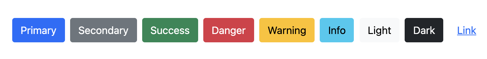
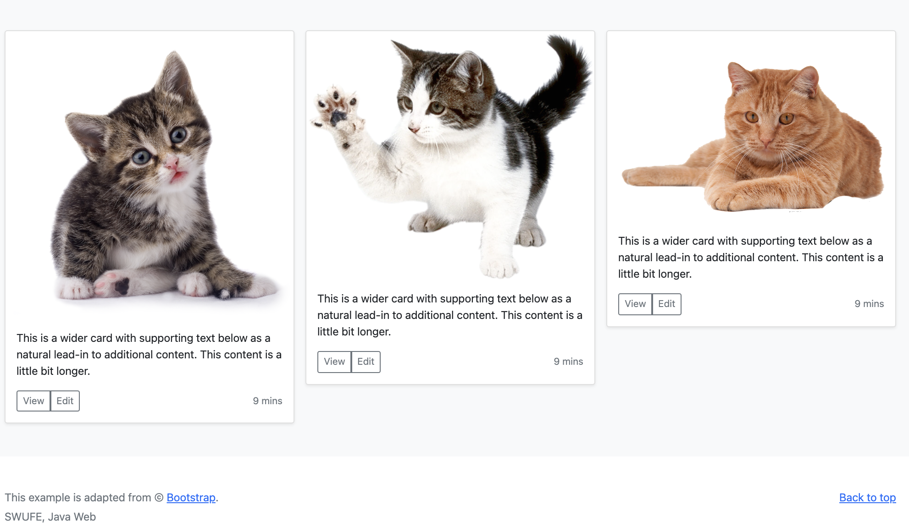

2.5 Hands On MVC (2)
In this section, we are going to enhance the mini MVC project by introducing CSS. It is not mandatory for Java developers to master front-end technologies, but enriching your developing toolbox is always welcome if the input-output ratio is relatively small[1]. And strictly speaking, when it comes the front-end, both CSS and JS are essential. However, in this textbook, we only focus on basic CSS, a practical skill with small input-output ratio, and further self-learning is welcomed.
[!NOTE] You can jump to the next chapter directly if you are not interested in the front-end skills.
A brief introduction to CSS [2]
Cascading Stylesheets — or CSS — is the first technology you should start learning after HTML. While HTML is used to define the structure and semantics of your content, CSS is used to style it and lay it out[3]. For example, you can use CSS to alter the font, color, size, and spacing of your content, split it into multiple columns, or add animations and other decorative features.
Fist of all, let's have a look at CSS syntax. CSS is a rule-based language — you define rules specifying groups of styles that should be applied to particular elements or groups of elements on your web page. For example "I want the main heading on my page to be shown as large red text."
The following code shows a very simple CSS rule that would achieve the styling described above:
h1 {
color: red;
font-size: 5em;
}
The rule opens with a selector . This selects the HTML element that we are going to style. In this case we are styling level one headings (<h1>). We then have a set of curly braces { }. Inside those will be one or more declarations, which take the form of property and value pairs. In our example, we have the color property, which can take various color values. We also have the font-size property. This property can take various size units as a value.
The CSS code above can be put in the <style> tag nested in <head>, and you can find the complete code in index2.html under mini-mvc | src | main | webapp.

Of course, this new HTML page is far away from beauty, but it is a good start for styling. In practice, we often write CSS code in a single file (.css) for the ease of reuse[4], and then link to that CSS file in HTML via <link> tag nested in <head>. You can find the complete code in index3.html under mini-mvc | src | main | webapp.
<link href="index.css" rel="stylesheet">
The key to CSS: selector
CSS selectors define the elements to which a set of CSS rules apply.
When learning CSS, people often have to understand how to use a selector as well as the supported properties and values given a selector. Generally speaking, a selector is used to select the element(s) you want to style. Here is a complete selector sheet. In our example, the selector h1 is to select all <h1> elements.
Each CSS rule starts with a selector — or a list of selectors — in order to tell the browser which element or elements the rules should apply to. All the examples below are valid selectors or lists of selectors.
h1
a:link
.manythings
#onething
.box p
.box p:first-child
h1, h2, .intro
It seems a bit obscure. Calm down. As for basic selectors, there are only three forms:
- Type selector. Selects all elements that have the given node name. For example,
h1will match any<h1>element. - Class selector. Selects all elements that have the given class attribute. For example,
.indexwill match any element that has a class of "index". - ID selector. Selects an element based on the value of its id attribute. There should be only one element with a given ID in a document. For example,
#tocwill match the element that has the ID "toc".
In index3.html, we define two classes, foo and bar, respectively.
<h2 class="foo">Class foo is #568900</h2>
<h2 class="bar">Class bar is rgb(10, 20, 100)</h2>
The following is CSS with class selector:
.foo {
color: #568900;
}
.bar {
color: rgb(10, 20, 100);
}
Recall the <select>'s id attribute is books, and the following is CSS with ID selector:
#books {
background-color: cadetblue;
}
As a final exercise, we firstly add class="button" for the submit button, then in index.css. Preview index3.html, and try to understand how it works.
.button {
background-color: #4CAF50;
border: none;
color: white;
padding: 15px 32px;
text-align: center;
text-decoration: none;
display: inline-block;
font-size: 16px;
margin: 4px 2px;
cursor: pointer;
}
UI framework: Bootstrap
Mastering CSS and JS is important if you would like to have a deep understanding about the front-end. However, due to the time limit of a one-semester course, we won't focus on them. In addition, the main aim of this book is to train yourself as a qualified back-end Java web developer. So, how can you write a modern web page with very limited front-end skills? Well, it is possible as there are many awesome UI frameworks (e.g., Bootstrap) available that help you build elegant web pages like playing lego games.
Bootstrap, the world’s most popular front-end open source toolkit, is directed at responsive, mobile-first web development. What does Bootstrap do for you exactly? Well, it has extensive prebuilt CSS rules for commonly used UI components, including buttons, forms, navbar, so you can apply those rules without writing them manually. Recall the stylish button above. Bootstrap also includes several predefined button styles (such as btn-primary), each serving its own semantic purpose.
<button type="button" class="btn btn-primary">Primary</button>
<button type="button" class="btn btn-secondary">Secondary</button>
<button type="button" class="btn btn-success">Success</button>
<button type="button" class="btn btn-danger">Danger</button>
<button type="button" class="btn btn-warning">Warning</button>
<button type="button" class="btn btn-info">Info</button>
<button type="button" class="btn btn-light">Light</button>
<button type="button" class="btn btn-dark">Dark</button>
<button type="button" class="btn btn-link">Link</button>
And the following is what will display:

As long as you get used to those built-in CSS classes, you are able to create modern web pages as you wish. For example, you can use the card to introduce cats in HTML. And we also adapt an album example based on card component. The complete code can be found at card.html and animals.html, respectively, under mini-mvc | src | main | webapp.
<div class="card text-white bg-secondary mb-3" style="width: 18rem;">
<img src="cat.png" class="card-img-top" alt="cat">
<div class="card-body">
<h5 class="card-title">Cat</h5>
<p class="card-text">The cat is a domestic species of small carnivorous mammal.</p>
<a href="#" class="btn btn-primary">Find more</a>
</div>
</div>
With the help of Bootstrap, you are able to build a non-trivial web page like this easily:

Client-side frameworks
Now, JavaScript is an essential part of the web, used on 95% of all websites[5], and the web is an essential part of modern life. The advent of modern JavaScript frameworks has made it much easier to build highly dynamic, interactive applications. A framework is a library that offers opinions about how software gets built.
There are many frameworks out there, but currently the "big three" are considered to be the following.
- Angular: Angular is an open-source web application framework led by the Angular Team at Google and by a community of individuals and corporations.
- Vue: Vue is an open-source model–view–viewmodel front end JavaScript framework for building user interfaces and single-page applications.
- React: React itself is not technically a framework; it's a library for rendering UI components. React is used in combination with other libraries to make applications.
Those frameworks are beyond the scope of this book. People who are interested in front-end skills can explore any of them through self-learning.
[1] Input-output ratio is mainly used in material control, which indicates the relation between the quantity of material used in the production and the quantity of final output. In general, the smaller input-output ratio, the bigger benefits in a given time/cost.
[2] This subsection is adapted from Learn to style HTML using CSS.
[3] Since JSP will finally output an HTML page, CSS can be also used to style JSP.
[4] CSS code can also be specified in the style attribute of the targeted element. For example, <h1 style="color: red; font-size: 5em;">Find the book you love.</h1>. But this inline style is infrequent, since it would make a chaos for the HTML structure and result in troubles for maintenance. Anyway, avoid using CSS in this way, when possible.
[5] https://w3techs.com/technologies/details/cp-javascript